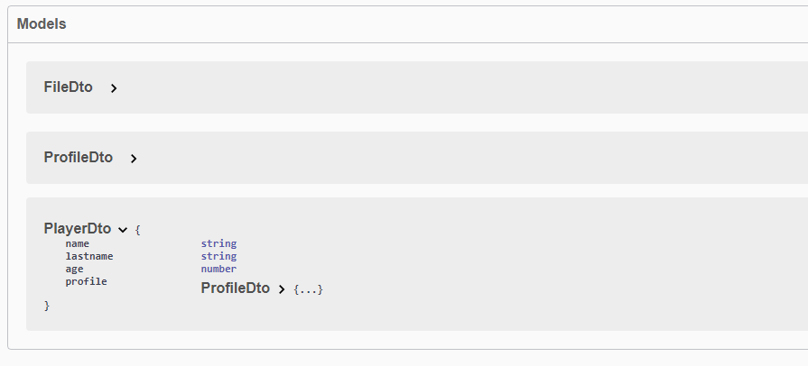
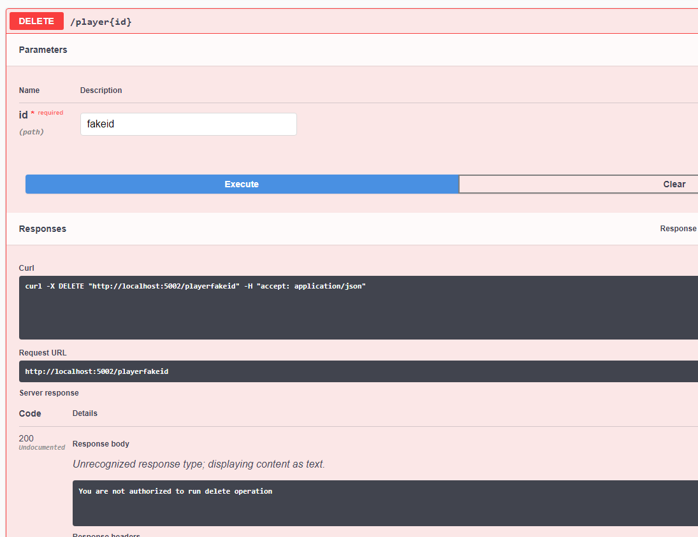

TypeORM CRUD
TypeORM CRUD controllers provide the CRUD operations (create, read, update, delete) for TypeORM entities. Each Sustainjs controller can extend TypeORMCrudController to get out-of-the-box theses operation
Let's take an example: Here we want to create Player controller.
First of all we need a DTO for the entity :
TypeORM Entity
import { Column, ObjectIdColumn, ObjectID } from 'typeorm';
import { ApiProperty } from '@sustain/common';
import { ProfileDto } from "./ProfileDto";
import { Entity } from 'typeorm';
@Entity()
export class PlayerDto {
@ObjectIdColumn()
id: ObjectID;
@Column()
@ApiProperty()
name: string;
@Column()
@ApiProperty()
lastname: string;
@Column()
@ApiProperty()
age: number;
@Column()
@ApiProperty()
profile: ProfileDto;
}
CRUD Controller
Then we easily create PlayerController that extends TypeORMCrudController and passing the DTO into it contractor.
import { CrudModel } from '@sustain/common';
import { Controller } from '@sustain/core';
import { PlayerDto } from '../dto/PlayerDto';
import { TypeORMCrudController } from '@sustain/crud';
@Controller('/player')
@CrudModel(PlayerDto)
export default class PlayerController extends TypeORMCrudController<PlayerDto> {
constructor() {
super(PlayerDto)
}
}
Let's find out what we got in Swagger-UI

And the DTO will be added to swagger model section

Override operations
Sometimes we need to override operation for many reasons, for example, we need to check if the user is allowed to delete a player.
@Controller('/player')
@CrudModel(PlayerDto)
export default class PlayerController extends TypeORMCrudController<PlayerDto> {
constructor() {
super(PlayerDto)
}
@Delete(':id')
overridedDelete(@Param('id') id: string) {
// A validation process here, you can use Interceptors
return 'You are not authorized to run delete operation';
}
}
The result will be 